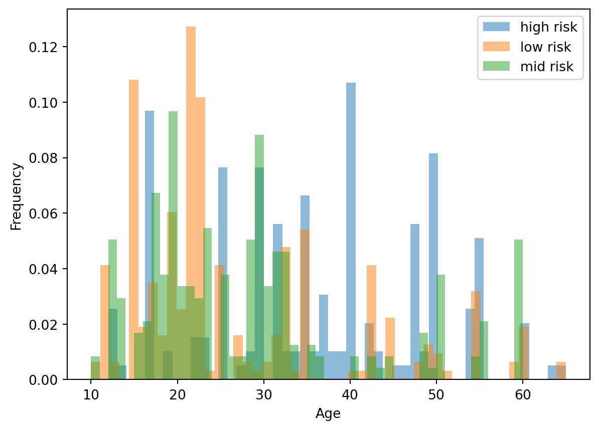
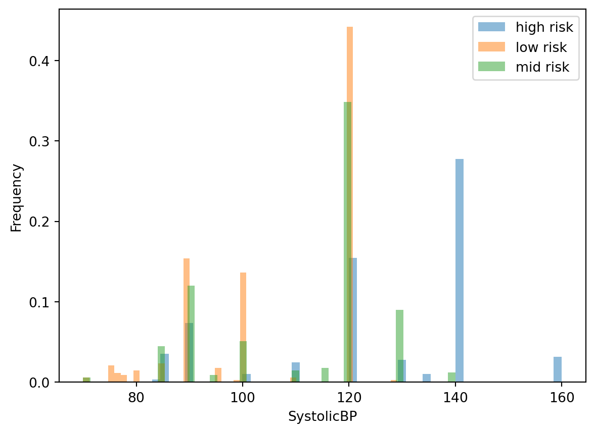
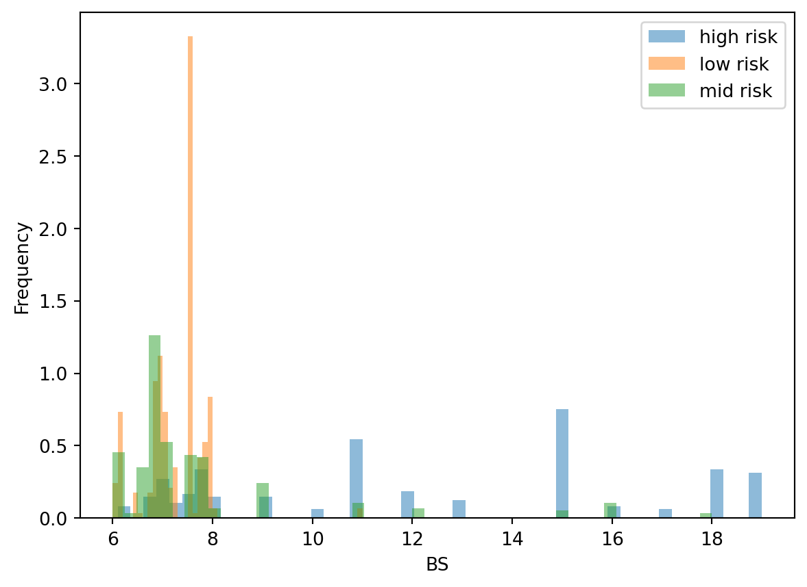
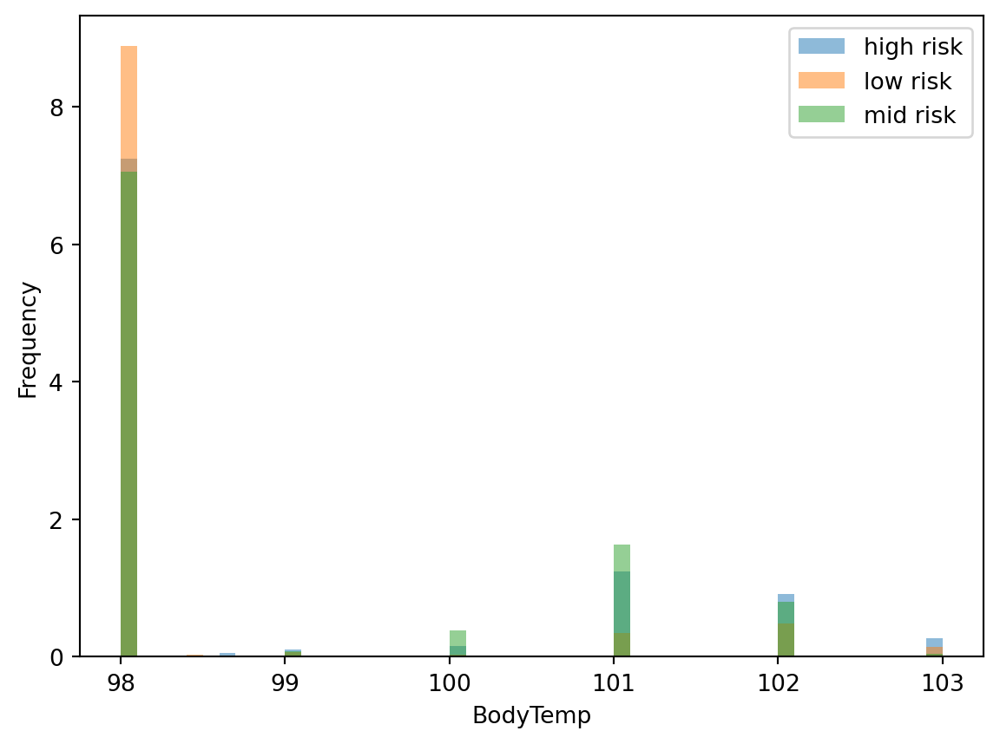
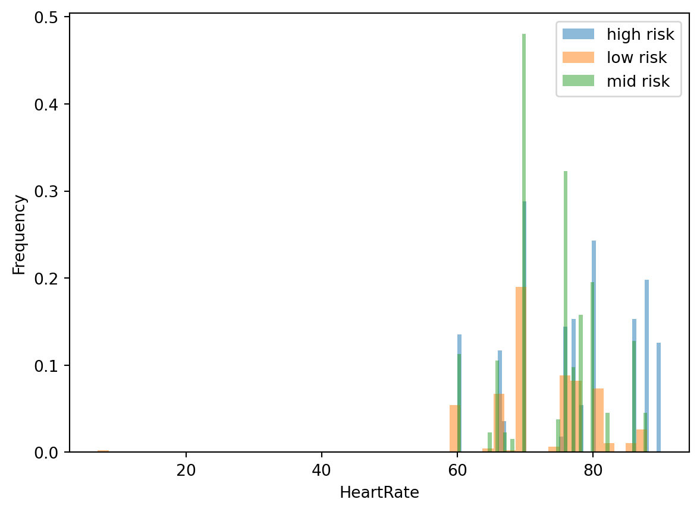
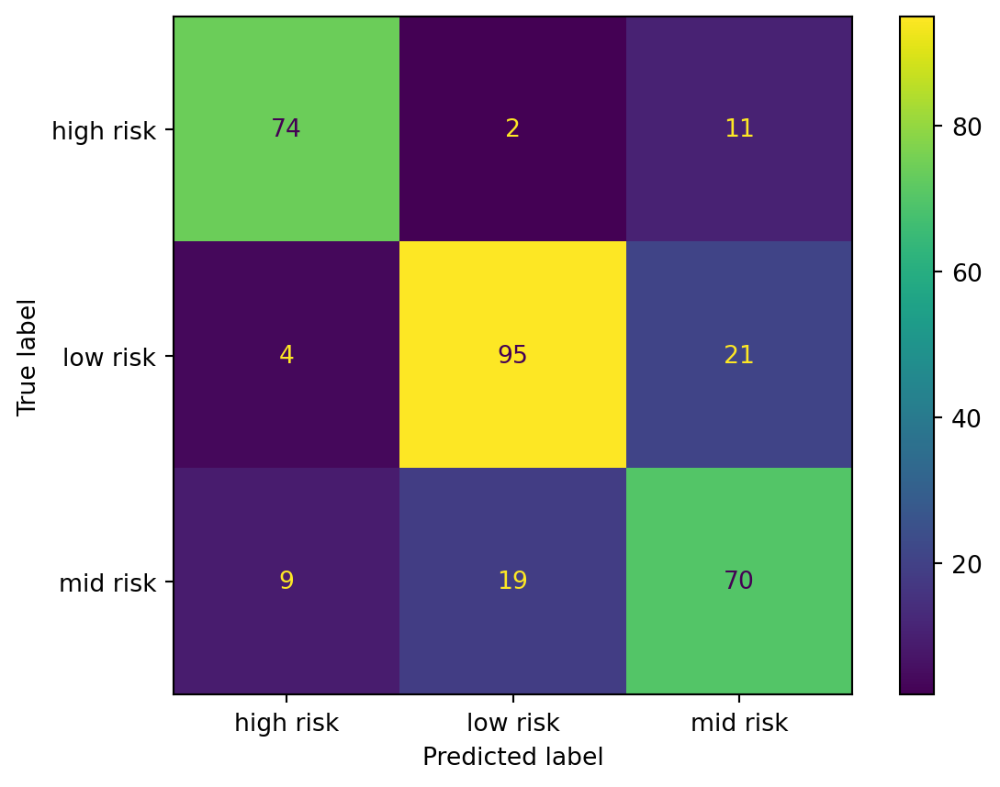

Apoorva Srivastava, Gloria (Guaner) Yi, Jeffrey Ding & Randall Lee
Abstract
Despite advancements in medicine and technology, maternal mortality remains a prevalent issue impacting many women in developing countries. The general consensus is that maternal mortality is a multidimensional issue that is complicated by many socioeconomic determinants of health and barriers to access. This project aims to investigate the viability of using a Support Vector Classifier (SVC) trained on open-source maternal health measurements to predict the risk intensity levels (low, medium, or high) of pregnant women. Our final classifier performed fairly well on an unseen test data set, with a weighted recall score of 0.77 and an overall accuracy of 0.77. Out of the 305 test data cases, it correctly predicted 235 cases. The model showed particularly strong performance in identifying high-risk pregnancies, achieving an AUV of 0.943 for the high-risk class, compared to 0.820 for low-risk class and 0.814 for medium-risk class. However, the model made notable errors where 13 high-risk cases were misclassified as 11 medium-risk and 2 low-risk. These false negatives are gaps where high-risk individuals may not receive the necessary care. We recommend further research to improve the model’s sensitivity to high-risk cases and better differentiate between medium and low-risk categories before it is ready to be put into production in clinical settings. Additional feature engineering or exploring ensemble methods may help reduce these critical misclassifications. The implementation of refined classifiers would expand the capabilities of most healthcare systems and increase the efficacy of monitoring and interventions in underprivileged communities.
Introduction
Maternal mortality is a serious issue that predates human history and still affects many mothers today. Among women of reproductive age, 9% of global deaths are currently attributable to maternal causes such as hemorrhaging, hypertension, and unsafe abortion (Hassfurter 2025). Fortunately, gradual improvements in medical understanding, policy, healthcare, and overall quality of life have led to steadily decreasing maternal mortality rates. Recent UNICEF reports from 2023 place the global maternal mortality ratio at 197 per 100,000 live births, which is approximately 40% less than the reported ratio from 2000. Although many countries report mortality rates on par with the global average, there are an overwhelming number of rural and underserved communities within these countries that continue to experience disproportionate rates of maternal mortality.
One such country is Bangladesh, which has an overall maternal mortality ratio of 196 per 100,000 live births that appears to match the global rates; however, deeper investigation reveals significant differences in mortality rate between women of different socioeconomic backgrounds. A study conducted by Aniqa Tasnim Hossain and their team from Bangladesh’s International Centre for Diarrhoeal Disease Research noted the following findings:
“women living in rural areas and those of poorer socioeconomic status were more likely to die due to maternal causes of deaths. Most deaths occurred on the day of and one day after delivery. We identified haemorrhage and eclampsia as the major contributors to maternal deaths. We also found a large proportion of deaths occurring in-transit with substantial shuttling for care seeking before their deaths. (Hossain et al. 2023)”
In their conclusions, Hossain et al. (2023) recommended investing in a structured referral system and emergency transportation to prioritize delivering timely interventions for haemorrhaging or eclampsia. This sentiment is echoed in a paper published in The Lancet that performed a global analysis of the determinants in marternal health and mortality (Souza et al. 2023). Souza et al. (2023) argues that focusing research on the biomedical causes of mortality is insufficient, and more attention should be directed towards goals such as “primary prevention, early identification, and adequate management of pregnancy, labour, and postpartum complications”.
Both reports highlight a growing need for the ability to identify and prioritize high-risk mothers in order to accurately and punctually deliver care. A welcome innovation has been the development of wearable technology and internet-enabled devices. These devices have allowed patients and physicians to reliably monitor health conditions from their homes and enabled the collection of physiological data from otherwise underserved communities. In 2020, Ahmed et al. (2020) used these devices as well as available medical records to build maternal health dataset of rural Bangladesh, which was later uploaded to the UC Irvine Machine Learning Repository. This project seeks to predict maternal health risk levels using an SVC model and the Maternal Health Risk dataset. The ability to accurately predict high-risk pregnancies would allow timely and focused medical interventions for vulnerable individuals.
Methods
Data
The data set used in this project is of health conditions of pregnant women from the rural areas of Bangladesh created by Marzia Ahmed at Daffodil International University. This dataset was sourced from the UC Irvine Machine Learning Repository and can be found here. Each observation in the dataset corresponds to a pregnant individual’s health profile, comprising a risk intensity level (low, medium, or high risk) and associated clinical measurements including demographic information (age) and vital signs (systolic blood pressure, diastolic blood pressure, blood glucose concentration, body temperature, and resting heart rate). The data set was collected via an IoT-based risk monitoring system from hospitals, community clinics, and maternal health cares in rural Bangladesh.
Data dictionary
Column Name
Role
Type
Description
Age
Feature
Integer
Age of the patient during pregnancy (in years)
SystolicBP
Feature
Integer
Systolic (upper) blood pressure measured in mmHg
DiastolicBP
Feature
Integer
Diastolic (lower) blood pressure measured in mmHg
BS
Feature
Integer
Blood sugar level measured in mmol/L
BodyTemp
Feature
Integer
Body temperature of the patient measured in °F
HeartRate
Feature
Integer
Patient’s resting heart rate measured in bpm
RiskLevel
Target
Categorical
Predicted pregnancy risk level based on clinical features
Analysis
SVC was used to build a classification model to predict risk levels for pregnant women in rural Bangladesh. With the exception of diastolic blood pressure, all variables from the original dataset were included for analysis. The features used were age, systolic blood pressure, blood glucose level (BS), body temperature, and heart rate. Data was partitioned into a 70:30 train-test split and the random_state was set to 123 for reproducibility. We performed hyperparameter tuning using randomized search with 10-fold cross-validation and recall score (weighted) as our evaluation metric to select the optimal values for C (regularization parameter), gamma (kernel coefficient). Recall score was selected to optimize the model for sensitivity in predicting high-risk cases. All explanatory variables were numerical and were standardized via StandardScalar prior to fitting. The Python programming language and the following Python packages were used to perform the analysis: requests (Reitz et al. 2023), numpy (Harris et al. 2020), Pandas (McKinney et al. 2010), pandera (Bantilan 2023), altair (VanderPlas et al. 2018), matplotlib (Hunter 2007), seaborn (Waskom 2021), deepchecks (Deepchecks 2022), scikit-learn (Pedregosa et al. 2011), and scipy (Virtanen et al. 2020).
Results
Split Data
Ahmed’s Maternal Health Risk dataset was read into a data frame and split 70:30 into a training dataset and testing dataset, respectively. The training dataset was used to build and train the model, and the test data was maintained separately for objective evaluation of the model’s performance. A random seed was saved to ensure reproducibility of the data split.
Preliminary exploratory data analysis (EDA) was performed to briefly examine each explanatory variable. Previous research have described hypertension as a complication risk; therefore, we dropped diastolic BP for the more commonly significant systolic. Distributions of each explanatory variable were plotted using histograms and coloured according to risk levels Figure 1 (blue: high risk, green: medium risk, orange: low risk). The plotted distibutions were visually distinct across risk levels. Thus, we continued to fit our model with the remaining features.

(a) Age Distribution

(b) Systolic BP Distribution

(c) Blood Sugar Distribution

(d) Body Temp Distribution

(e) Heart Rate Distribution
Figure 1: Comparison of the distributions of features contributing to the risk intensity level.
Data Validation
Validation Ranges
For Age, we chose a validation range of 10-65 years. The lower limit of 10 accounts for rare cases of very early pregnancy, though pregnancies below the age of 15 are generally medically concerning. The upper limit of 65 represents the maximum biologically feasible range for pregnancy, though pregnancies beyond menopause are extremely rare and would usually require medical intervention. In very rare cases, values outside this range may occur but we can consider them extreme outliers, not suitable for our prediction task.
For SystolicBP, we chose a validation range of 60-200 mmHg. Systolic blood pressure below 60 mmHg indicates severe hypotension, whereas systolic blood pressure above 200 mmHg indicates severe hypertension, both of which are life-threatening emergencies requiring immediate medical intervention. Since our model aims to classify routine maternal health risk levels, values outside the validation range are outside the scope of our classification model and would be considered outliers.
For DiastolicBP, we chose a validation range of 40-140 mmHg. Diastolic blood pressure below 40 mmHg indicates severe hypotension, whereas diastolic blood pressure above 140 mmHg indicates severe hypertension, both of which are life-threatening emergencies requiring immediate medical intervention. Since our model aims to classify routine maternal health risk levels, values outside the validation range are outside the scope of our classification model and would be considered outliers.
For BS, we chose a validation range of 1-25 mmol/L. Blood sugar below 1 mmol/L indicates severe hypoglycemia, whereas blood sugar above 25 mmol/L indicates severe hyperglycemia. Both of these are life-threatening emergencies requiring immediate hospitalization and can therefore be considered unsuitable for our predictive model.
For BodyTemp, we chose a validation range of 95.0-105.0°F. Body temperature below 95.0°F indicates severe hypothermia, whereas body temperature above 105.0°F indicates severe hyperthermia. Both of these are life-threatening emergencies requiring immediate hospitalization and can therefore be considered as unsuitable for our predictive model.
For HeartRate, we chose a validation range of 50-150 bpm. A resting heart rate below 50 bpm or above 150 bpm suggests potential cardiovascular problems requiring immediate medical intervention. Neither of the extreme values is compatible with normal maternal health assessment, and such values can be considered outliers.
The target variable RiskLevel is a categorical variable representing the maternal health risk classification based on clinical assessment. Each observation must contain exactly one of these three risk levels: low risk, mid risk and high risk.
To ensure that the target variable is not severely imbalanced, we applied a minimum class frequency check (at least 5% per class). This avoids situations where certain risk levels are too rare for the model to learn meaningful patterns, which could lead to biased predictions.
Data shape before validation:
(1014, 7)
Data shape after validation:
(1010, 7)
Validation Range Results
We dropped 4 observations during our preliminary data validation, as these rows contain invalid data entires that would introduce noise into our model. More details about which observations have been dropped can be found under validation_errors.log in the notebooks folder.
The validation log shows that the dropped observations include: - 2 rows with Age outside the expected range (10-65 years): ages 66 and 70 - 2 rows with HeartRate of 7 bpm, which seems an impossibility for living people
Duplicate Observations
We have retained the 562 duplicate rows found in our data validation checks. Since the original data set lacks unique patient identifiers (no patient ID or timestamp), we cannot definitely determine whether these duplicates represent the same patient measured multiple times or different patients with identical measurements. Given this uncertainty and the substantial dataset reduction that would result from removing the duplicates, we opted to keep all duplicate rows and only remove observations that clearly fail other data validation checks.
The dataset passed all other validation checks, namely: - Correct data file format - Correct column names - No empty observations - Missingness not beyond expected threshold: all columns have <5% missing values (threshold = 0.05) - Correct data types in each column - Correct category levels: all categorical values match expected levels - No outliers: all numeric values fall within reasonable ranges (with the exception of the 4 dropped rows) - Target/response variable follows expected distribution
Our final validated dataset validated_data contains 1,010 observations.
To ensure that our predictive modeling process does not rely on spurious or overly strong relationships, we performed two correlation-based data validation checks on the training split only (to avoid test-set leakage):
Target–Feature Correlation Check
We applied the FeatureLabelCorrelation check from Deepchecks (used Pandera for a similar test if Deepchecks can’t be used). This check evaluates whether any feature has an strong relationship with the target variable (RiskLevel), which could be a sign of target leakage. Threshold used: correlation < 0.9
Result: All features met the threshold. No anomalous or suspiciously high correlations were detected between features and the target.
Feature–Feature Correlation Check
We also used Deepchecks’ FeatureFeatureCorrelation` to check for unusually high correlations between pairs of features, which may indicate redundancy or multicolinearity in modeling.
Result: Feature–feature correlations met the threshold. No pairs of features exhibited extremely high correlation that would require removal or special handling.
Overall Conclusion
The validated dataset was confirmed to be within acceptable ranges and both correlation checks passed. There were no failing rows, and no features required modification or exclusion based on these validation steps. This suggests that the dataset has no correlation-based anomalies, and is appropriate for next step of model training.
Model construction
We selected a Support Vector Classifier (SVC) model for this classification task. To identify the model configuration that best predicted maternal health risk levels, we performed hyperparameter tuning using randomized search with 10-fold cross-validation and recall score (weighted) as our evaluation metric to select the optimal values for C (regularization parameter), gamma (kernel coefficient). We found that the optimal hyperparameters were 760 for C and 5.8 for gamma.
Table 6: Dummy Classifier Cross-Validation Scores
fit_time
score_time
test_score
train_score
0
0.000483
0.000745
0.401408
0.403880
1
0.000366
0.000282
0.401408
0.403880
2
0.000342
0.000286
0.401408
0.403880
3
0.000344
0.000263
0.408451
0.402116
4
0.000350
0.000255
0.404255
0.403169
Table 7: SVC Cross-Validation Scores (Default)
fit_time
score_time
test_score
train_score
0
0.011944
0.004028
0.725352
0.707231
1
0.007503
0.002931
0.676056
0.719577
2
0.007589
0.002840
0.718310
0.719577
3
0.007249
0.002728
0.711268
0.708995
4
0.007000
0.002681
0.659574
0.727113
Hyperparameter tuning
In order to classify clinical risk levels, recall score was selected as the preferred evaluation metric. This is because recall score measures the percentage correctly identified of actual high-risk pregnancies. This is critical for maternal health prediction where false negatives could result in missing high-risk, vulnerable individuals. Although prioritizing recall could increase the rate of false positive errors, it is the safer choice in this context.
Figure 2: Results from hyperparameter optimization and 10-fold cross validation to choose gamma and C. Recall score was used as the classification metric as gamma and C was varied.
Table 9: Crosstab of Actual vs Predicted Risk Levels
predicted
high risk
low risk
mid risk
actual
high risk
74
2
11
low risk
4
95
21
mid risk
9
19
70

Figure 3: Confusion matrix of model performance on test data.
Figure 4: ROC curve of model performance on test data.
Summary of Model Results
The final SVC classifier performed fairly well on an unseen test data set, with a weighted recall score of 0.77 and an overall accuracy of 0.77. Out of the 305 test data cases, it correctly predicted 235 cases. The model showed particularly strong performance in identifying high-risk pregnancies, achieving an AUC of 0.953 for the high-risk class, compared to 0.884 for low-risk class and 0.858 for medium-risk class. It correctly identifies 74 out of 87 actual high-risk pregnancies resulting in a 85% recall for high risk. There were 13 notable errors in which true high-risk cases were misclassified as 11 medium-risk and 2 low-risk.
Discussion
The latest interation of the SVC model delivered promising results and demonstrated considerable accuracy when classifying high-risk individuals. Correct identification of high-risk individuals is pivotal in the prevention and early intervention of pregnancy complications, such as hemorrhaging and eclampsia. The model’s ability to correctly classify high-risk inviduals is encouraging, and future interations could help alert doctors or emergency responders to improve accessibility for underserved communities.
Further refinement is required, however, as the model made 13 notable classification errors during testing. 13 truely high-risk cases were misclassified as 11 medium-risk and 2 low-risk. In reality, these false negatives are gaps where high-risk individuals could be overlooked and not prioritized appropriately. Future versions should seek to improve the model’s sensitivity to high-risk cases and better differentiate between medium and low-risk categories before it is ready to be implemented in clinical settings.
A limitation of this model is that other devices and their sensors may have different measurement accuracies and calibration standards. The model was trained on data collected from specific IoT devices in rural Bangladesh; therefore, its performance may vary when applied to data from different devices or populations. Additionally, other countries may have health information documentation standards that differ from Bangladesh. Future work should consider validating the model across diverse datasets and device types to ensure its robustness and generalizability.
Conclusion
Global maternal mortality rates are on the decline; however, there remains unmet needs within many developing and underserved communities. Greater emphasis on primary prevention and early identification would enable better management of pregnancy complications and improve health outcomes overall. This report demonstrates the potential of machine learning models and at-home monitoring devices. With further improvement, these tools could create opportunities for more focused, effective, and resourceful delivery of care.
References
Ahmed, M., M. A. Kashem, M. Rahman, and S. Khatun. 2020. “Review and Analysis of Risk Factor of Maternal Health in Remote Area Using the Internet of Things (IoT).” Springer. https://doi.org/10.1007/978-981-15-2317-5_30.
Harris, Charles R., K. Jarrod Millman, Stéfan J. van der Walt, Ralf Gommers, Pauli Virtanen, David Cournapeau, Eric Wieser, et al. 2020. “Array Programming with NumPy.”Nature 585 (7825): 357–62. https://doi.org/10.1038/s41586-020-2649-2.
Hossain, A. B. M. Sharif, A. Siddique, S. Jabeen, S. Khan, M. Moinuddin Haider, S. Ameen, Tazeen Tahsina, et al. 2023. “Maternal Mortality in Bangladesh: Who, When, Why, and Where? A National Survey-Based Analysis.”Journal of Global Health 13. https://doi.org/10.7189/jogh.13.07002.
Hunter, John D. 2007. “Matplotlib: A 2D Graphics Environment.”Computing in Science & Engineering 9 (3): 90–95.
McKinney, Wes et al. 2010. “Data Structures for Statistical Computing in Python.” In Proceedings of the 9th Python in Science Conference, 445:51–56. Austin, TX.
Pedregosa, Fabian, Gaël Varoquaux, Alexandre Gramfort, Vincent Michel, Bertrand Thirion, Olivier Grisel, Mathieu Blondel, et al. 2011. “Scikit-Learn: Machine Learning in Python.”Journal of Machine Learning Research 12 (Oct): 2825–30.
Souza, J. P., L. Day, A. C. Rezende-Gomes, J. Zhang, R. Mori, A. Baguiya, K. Jayaratne, et al. 2023. “A Global Analysis of the Determinants of Maternal Health and Transitions in Maternal Mortality.”The Lancet Global Health 12 (2). https://doi.org/10.1016/s2214-109x(23)00468-0.
VanderPlas, Jacob, Brian Granger, Jeffrey Heer, Dominik Moritz, Kanit Wongsuphasawat, Arvind Satyanarayan, Eitan Lees, Ilia Timofeev, Ben Welsh, and Scott Sievert. 2018. “Altair: Interactive Statistical Visualizations for Python.”Journal of Open Source Software 3 (32): 1057.
Virtanen, Pauli, Ralf Gommers, Travis E Oliphant, Matt Haberland, Tyler Reddy, David Cournapeau, Evgeni Burovski, et al. 2020. “SciPy 1.0: Fundamental Algorithms for Scientific Computing in Python.”Nature Methods 17 (3): 261–72.
Waskom, Michael L. 2021. “Seaborn: Statistical Data Visualization.”Journal of Open Source Software 6 (60): 3021. https://doi.org/10.21105/joss.03021.